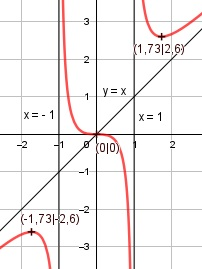

Aufgabe 121 x3 f(x) = -------- x2 - 1 Quotientenregel erste Ableitung: u = x3, u' = 3x2 v = x2 - 1, v' = 2x 3x2 * (x2 - 1) - 2x * x3 f'(x) = ---------------------------- (x2 - 1)2 3x4 - 3x2 - 2x4 x4 - 3x2 f'(x) = ------------------ = ----------- (x2 - 1)2 (x2 - 1)2 Quotientenregel zweite Ableitung: u = x4 - 3x2, u' = 4x3 - 6x v = (x2 - 1)2 Kettenregel: v' = 2 * 2x * (x2 - 1) = 4x * (x2 - 1) (4x3-6x)*(x2-1)2 - 4x*(x2-1)*(x4-3x2) f''(x) = --------------------------------------- (x2 - 1)4 (x2-1)*[(4x3-6x)(x2-1) - 4x*(x4-3x2)] f''(x) = --------------------------------------- (x2 - 1)4 4x5- 10x3 + 6x - 4x5 + 12x3 f''(x) = ----------------------------- (x2 - 1)3 2x3 + 6x f''(x) = ----------- (x2 - 1)3 Zur Beurteilung, ob f'''(x) ≠ 0 : (Begründung siehe Aufgabe 105) u = 2x3 + 6x, u' = 6x2 + 6 u' 6x2 + 6 f'''(x) = --- = ----------- ≠ 0 für alle x ≠ 1,-1 v (x2 - 1)3 Polstellen, Nenner = 0: x2 - 1 = 0 |+1 x2 = 1| ⱱ x1,2 = ± 1 Nenner = 0 und Zähler = ±13 ≠ 0 --> senkrechte Asymptote bei x = 1 und x = -1 Definitionsbereich: -∞ < x < ∞, x ≠ 1, -1 Zählergrad größer als Nennergrad --> Näherungskurve x f(x) = x3 : x2 - 1 = x + -------- -(x3 - x) x2 - 1 ---------- x x x + -------- geht gegen x für x --> ± ∞ x2 - 1 Wertebereich: -∞ < f(x) < ∞ Symmetrie zur y-Achse bzw. zum Punkt (0|0): (-x)3 -x3 f(-x) = ------------- = ---------- ≠ f(x) ((-x)2 - 1) (x2 - 1) --> keine Achsensymmetrie x3 -f(-x) = --------- = f(x) (x2 - 1) --> Punktsymmetrie Nullstellen: f(x) = 0 x3 --------- = 0 |*(x2 - 1) (x2 - 1) x3 = 0 | x1,2,3 = 0 Sattelpunkt bei N(0|0) Schnittpunkt mit der y-Achse: x = 0 03 f(0) = -------- = 0 02 - 1 Sy(0|0) Extrempunkte: f'(x) = 0 x4 - 3x2 ----------- = 0 |*(x2 - 1)2 (x2 - 1)2 x4 - 3x2 = 0 x2 * (x2 - 3) = 0 x2 = 0 |ⱱ x1,2 = 0; f(0) = 0 x2 - 3 = 0 +3 x2 = 3 |ⱱ x3,4 = 1,73 1,733 f(1,73) = ----------- = 2,6; f(-1,73) = -2,6 1,732 - 1 2 * 1,733 + 6 * 1,73 f''(1,73) = ----------------------- > 0 (1,732 - 1)3 --> Tiefpunkt (1,73|2,6) (-1,73)3 + 6 * (-1,73) f''(-1,73) = ------------------------- < 0 ((-1,73)2 - 1)3 --> Hochpunkt (-1,73|-2,6) Wendepunkte: f''(x) = 0 2x3 + 6x ---------- = 0 |*(x2 - 1)3 (x2 - 1)3 2x3 + 6x = 0 x(2x2 + 6) = 0 x1 = 0; f(0) = 0, f'''(0) ≠ 0 --> WP(0|0) 2x2 + 6 = 0|:2 x2 + 3 = 0 |-3 x2 = -3 |ⱱ --> kein weiterer Wendepunkt Graph:
